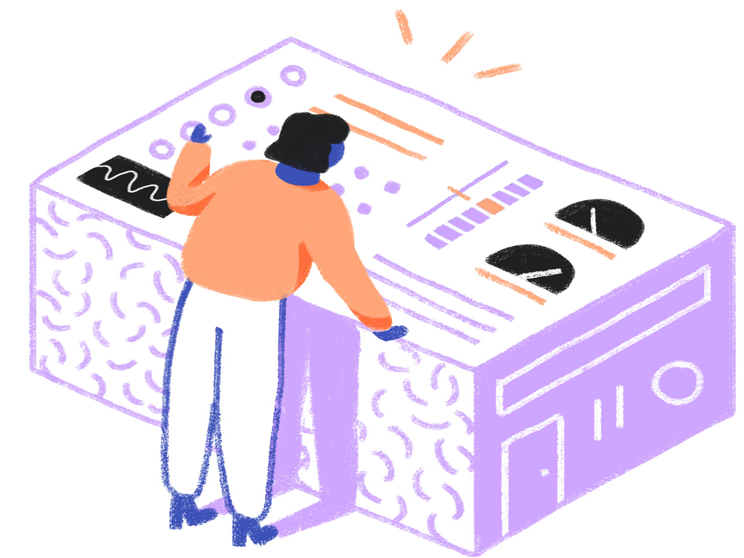

Almost there!
Just a few more buttons to press before we can have liftoff. Before we can give you the most optimal
experience there are still a few things to setup.
How will you use it?
Click on one of these uses to tell is how you will use this machine?
What are your interests?
Click on one of these uses to tell is how you will use this machine?